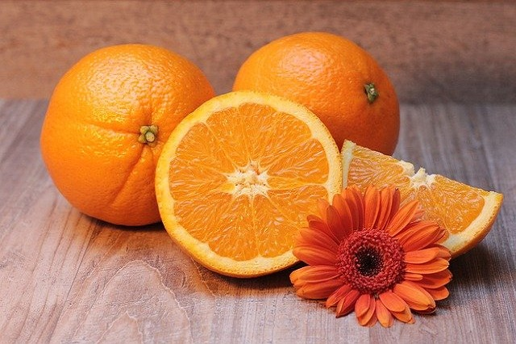
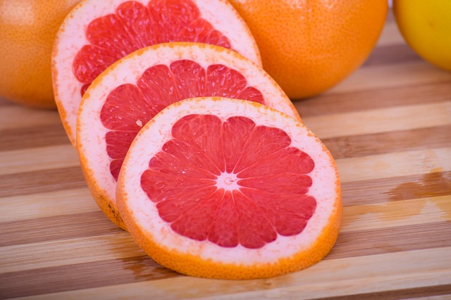
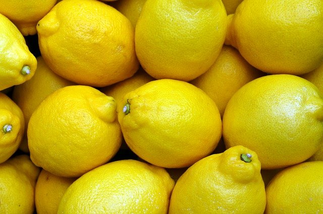

Narancs
A narancs vagy édes narancs (Citrus sinensis), népies neve auranci, oránzs déligyümölcs a
citrusformák alcsaládjából. Nem azonos a keserű naranccsal (Citrus × aurantium), ami a pomelo
(Citrus maxima) és a mandarin (Citrus reticulata) hibridje.
Lime
A lime (ejtsd: lájm), savanyú citrom vagy zöldcitrom (Citrus aurantiifolia) ázsiai eredetű, a
rutafélék (Rutaceae) családjába tartozó citrusféle. A növényfajt és termését egyaránt így nevezik. A
lime gyümölcsöt íze miatt gyakran a citromhoz hasonlítják, de annál savanyúbb, jellegzetesebb,
mérete kisebb és színe jellemzően zöld.

Grépfrút
A grépfrút (Citrus x paradisi), angolos írásmód szerint grapefruit, más néven citrancs a citrusformák
legfiatalabb tagja. Az 1750-es években fedezték fel, valószínűleg Barbadoson. A pomelo (Citrus
grandis) és a narancs (Citrus sinensis) hibridjeként alakult ki, bár az elsőhöz közelebb áll.

Citrom
A citrom, más néven közönséges citrom, valódi citrom vagy európai citrom[1] (Citrus × limon) a
citrusformák (Citroideae) alcsaládjába tartozó Citrus nemzetség egyik növényfaja. Termése, melyet
szintén citromnak hívnak, déligyümölcs és egyben fűszer is.
Mandarin
A mandarin (Citrus reticulata) a citrusformák közé tartozó déligyümölcs. Dél-Kínából származik,
Európába csak a 19. században kezdték beszállítani.
Részletesen a mandarinról
Pomelo
A pomelo vagy pummelo (avagy középső gyümölcs) (latin: Citrus grandis, binomiális név: Citrus maxima)
a rutafélék családjába tartozó, valószínűleg Malajziában és Polinéziában őshonos déligyümölcs.